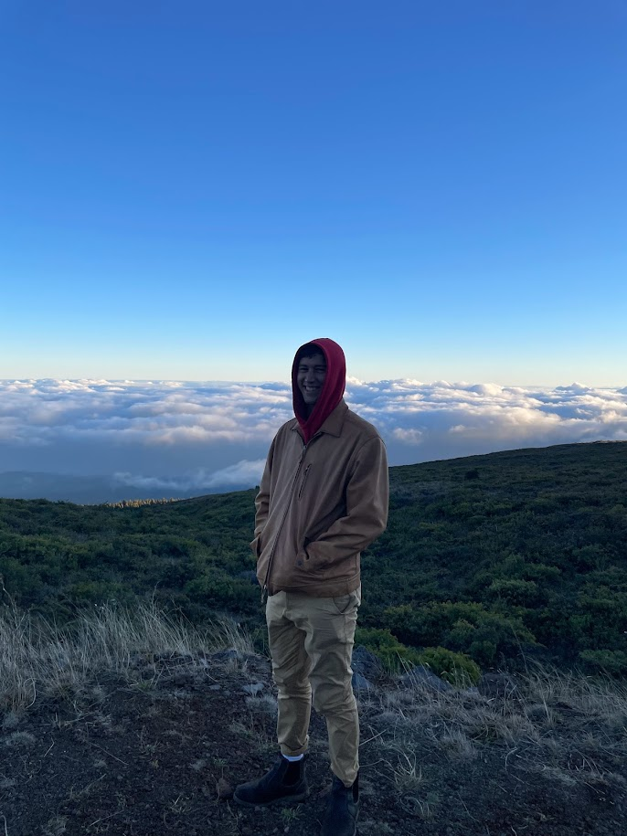
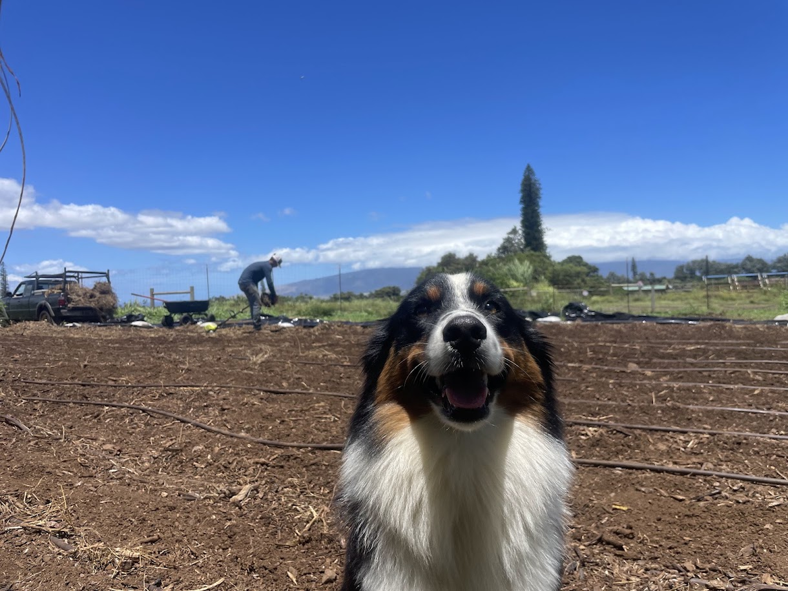

<section class="team">

    <div class="content">

        <h2>Meet the Team</h2>

        <div class="team-grid">

            <!-- Jessica -->

            <article class="team-member">

                

                <h3>Jessica Talbot</h3>

                <h4>Founder • Farmer • Farm Manager</h4>

                <p>

                    Jessica founded Kūʻono Farm with a vision of creating a
                    regenerative farm that nourishes both the land and the
                    community. She oversees every aspect of the farm, from
                    crop planning and flower production to floral design,
                    grant management, workshops, and long-term farm
                    development. Her passion lies in creating a place where
                    agriculture, education, and community come together.

                </p>

            </article>


            <!-- Deniz -->

            <article class="team-member">

                

                <h3>Deniz Bicakci</h3>

                <h4>Operations & Farm Support</h4>

                <p>

                    Deniz is the farm's all-around handyman and problem solver.
                    Whether it's repairing equipment, building infrastructure,
                    or tackling unexpected challenges, he's the person who keeps 
                    the farm running. 

                </p>

            </article>


            <!-- Lilo -->

            <article class="team-member">

                

                <h3>Lilo</h3>

                <h4>Farm Dog & Official Greeter</h4>

                <p>

                    Lilo is Kūʻono Farm's loyal four-legged employee.
                    She can usually be found greeting visitors, following
                    everyone around the farm, supervising projects, and
                    making sure no one works alone. Her enthusiasm and
                    friendly personality make her an important part of
                    daily life at Kūʻono Farm.

                </p>

            </article>

        </div>

    </div>

</section>
